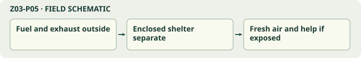

Z03-P05 · Fire and ignition
Separate camp fuel from enclosed shelter
Prevent exposure from using fuel appliances in a tent or vehicle.
When it applies · Fuel-burning stoves, heaters, charcoal and similar camping appliances.
Equipment · Product instructions, a lawful outdoor location and non-combustion alternatives for warmth.

Actions
- Keep fuel-burning camping equipment out of tents, vehicles and other enclosed sleeping spaces. Arrange the cooking area outdoors and follow equipment clearances.[C05, ED]
- Use dry layers and ground insulation for warmth in sleeping areas. Keep the exit clear.[E05, ED]
- If CO exposure is suspected, move to fresh air immediately and call emergency services.[C07]
Verify · The appliance is outside and exhaust cannot enter the occupied shelter.[C05, ED]
Stop or change course · Headache, dizziness, nausea or confusion during fuel use warrants immediate action.[C07]
Evidence and editorial notes
- C05 · CPSC · Portable Heaters and Camping Equipment
- Carbon monoxide poisoning from portable camping equipment · Tents, campers, vehicles and other enclosed spaces
Fuel-burning camping equipment can lead to fatal carbon monoxide buildup in enclosed spaces.
Primary source · checked 2026-11-24 - C07 · CPSC · Carbon Monoxide Fact Sheet
- CO poisoning symptoms; what to do if suspected · Suspected carbon monoxide exposure
Escape to fresh air immediately and contact emergency services. Symptoms can include headache, dizziness, nausea and confusion.
Primary source · checked 2026-11-24 - E05 · NWS · What To Do If You're Caught in a Winter Storm
- Outside and find shelter · Cold, wet or windy winter conditions
Block wind, stay dry and keep off cold ground. Keep exposure reduction separate from making a fire.
Primary source · checked 2026-11-24
Source lineage · B012 P14/P18 and CPSC camping equipment.